Павел Алтынников
Навыки
- C# разработчик и левелдизайнер
- ООП / Паттерны
- State Machine
- Git / Git LFS
- Unity 2D / 3D
- Shader Graph
- Devtools (Unity Editor)
- UniTask
- Addressables
О себе

Игра в жанре пазл-квиз.
Игроку нужно решить все головоломки и собрать все ключи от входной двери
чтобы узнать, а что же там происходит за пределыми квартиры.
На текущий момент это самая большая и долго разрабатываемая игра.
В ней находится главный уровень со входами в головоломки,
которых 18 штук.
В некоторых из них находятся ключи от последней двери.
Я работал не один, идея и концепция принадлежат моему другу,
а для арта мы нанимали профессиональную
художницу.
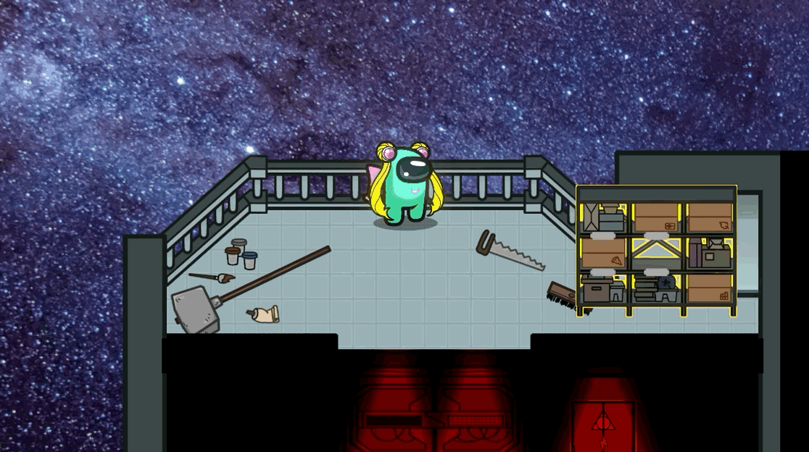
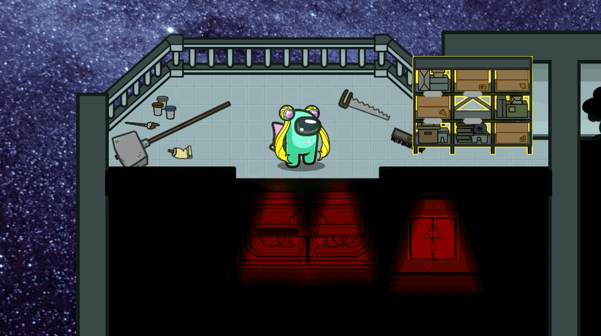
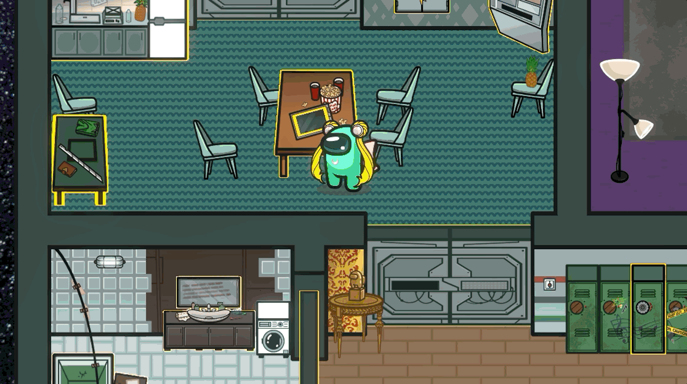
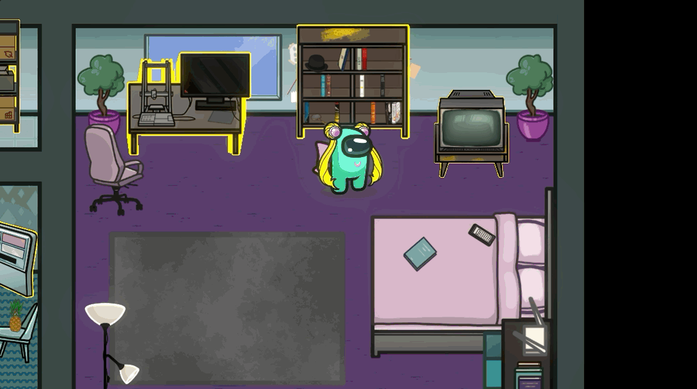
В игре есть Devtools. В релизной версии они скрыты от игрока, но их всё равно можно открыть, нужно кликать 10 раз по правому верхнему углу в течении 5 секунд и появятся две кнопки.
С их помощью можно:
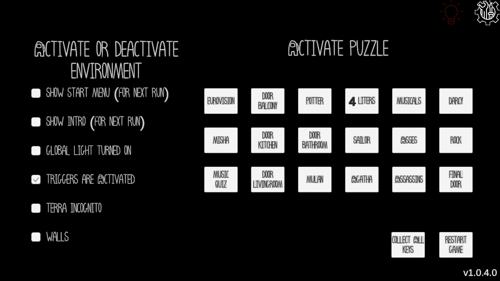
Последние два месяца я усиленно полировал игру (спасибо другу, который тестил каждый билд), но всё же хочется доделать в этой игре систему сейвов и оптимизировать игру для WebGL чтобы в неё можно было играть на itch.io.
Это подарок на ДР другу, который прошёл порядка 3000 игр (на данный момент).
Поэтому хотелось его удивить и сделать игру с большим количеством механик
из классических и не очень игр)
Тема игры: он проспал и опаздывает на работу.
Весь путь до работы это 4 уровня,
a переходы между уровнями выполнены в виде коммикса.
Если он "умирает", то снова просыпается и снова видит, что проспал.
Проснувшись, Влад упал с кровати и как змейка пополз собираться на работу. По квартире разбросаны вещи, которые он может съесть. Каждая съеденная вещь ускоряет его, а пицца является ХП для последующих уровней.
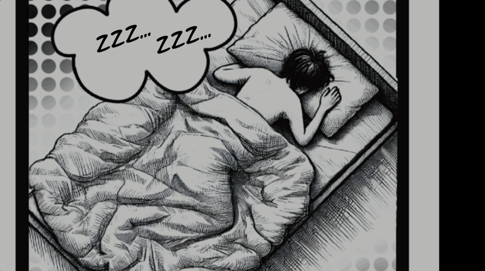
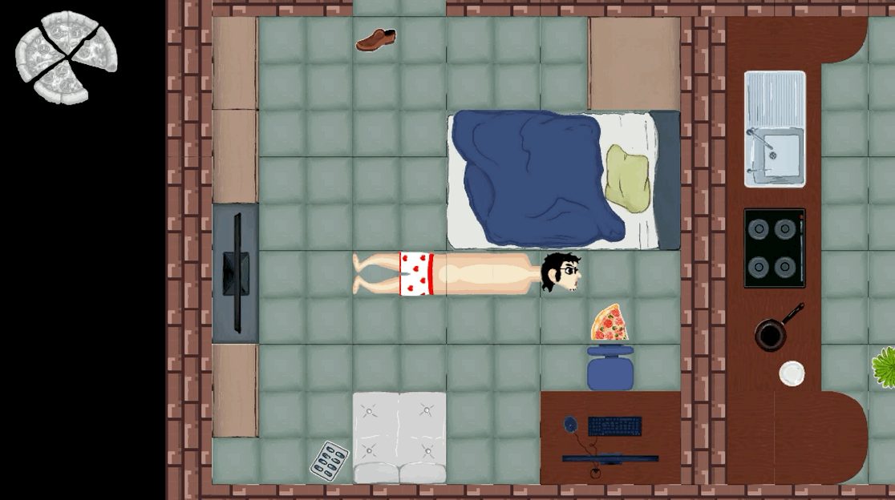
От дома до автобусной остановки нужно пробежать по улице, которую опять перекапали. Всё максимально скопировано из cuphead.
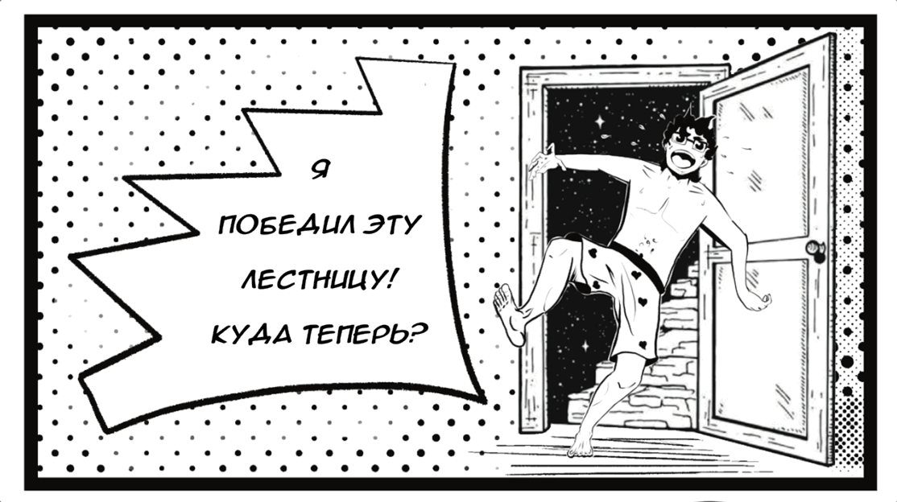

На этом уроне нужно управлять автобусом и объезжать утренний траффик. Уровень заканчивается на том, что автобус въезжает в пробку и только реакция игрока сможет позволить избежать столкновение и "перелететь" пробку до заветной остановки.
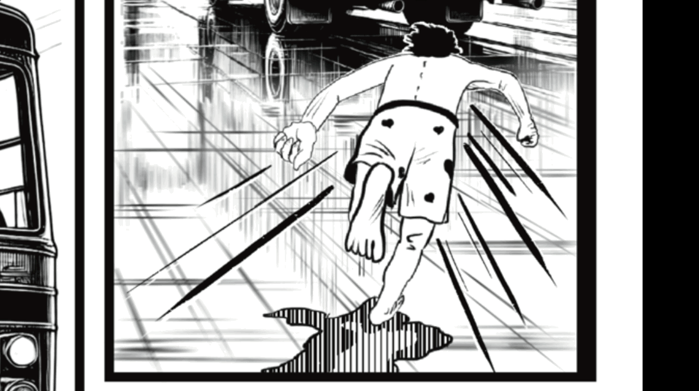

Перед последними метрами до оффиса, Влад случайно повстречал друга Ивана, который очень хотел с ним поговорить и никак не отпускал. Задача на этом уровне: в диалоге довести шкалу стресса Ивана либо, до минимума, либо до максимума. Но если ты будешь выбирать ответы, которые не будут влиять на Ивана, он будет откусывать от твоей пиццы.
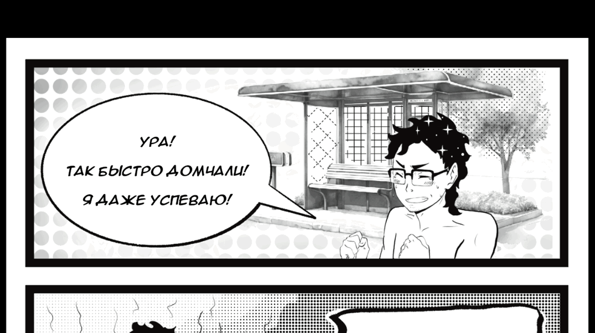
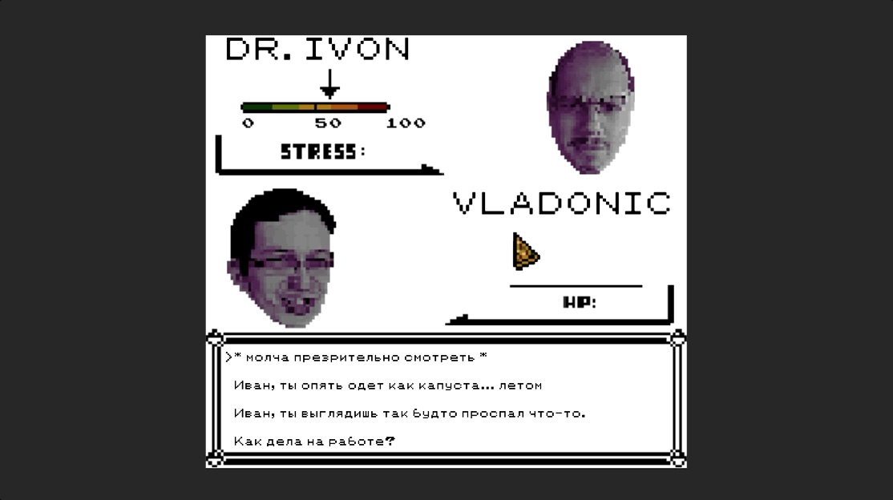
Это еще одна игра на ДР для подруги, которая уезжала работать в Казахстан. Мы решили подарить ей денег и для этого нужен был какой-то интерактив. За 3 дня до ДР мы поняли, что нужно сделать "викторину" на знание Казахстана, так и появилась эта игра. Моя жена искала и правила изображения для игры, а я делал всю оставшуюся часть.
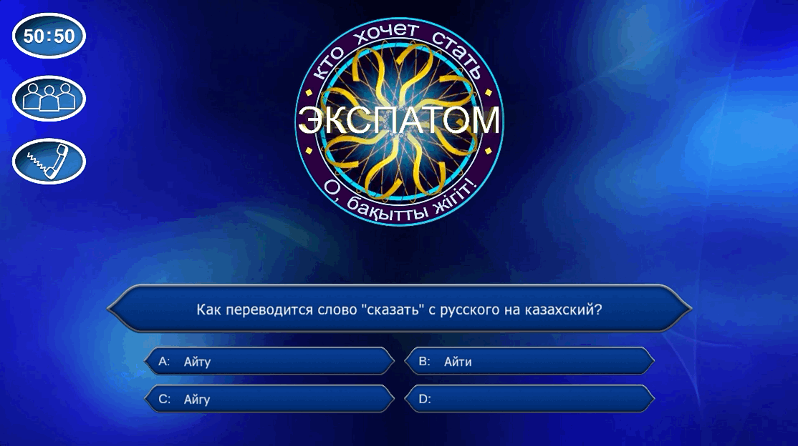
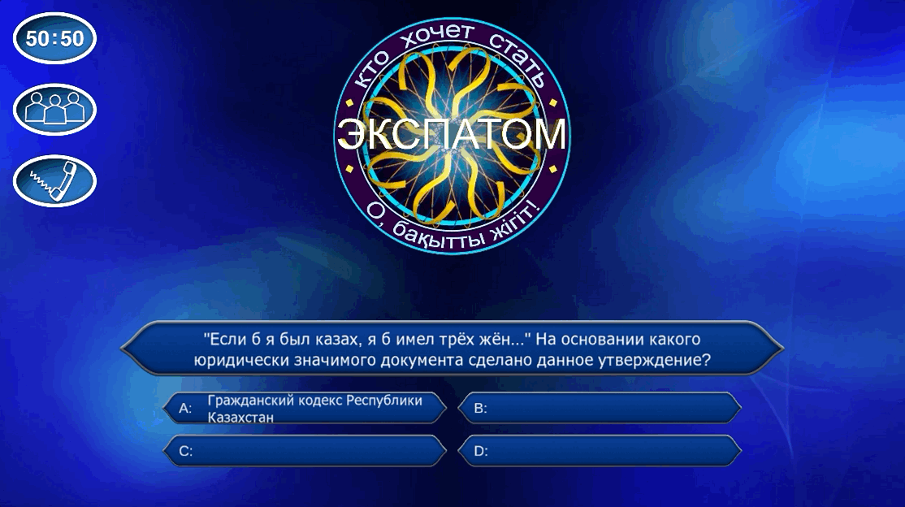
Работал в команде энтузиастов "SDR Games".
Кода было много и он был написан одним человеком достаточно сумбурно.
Поэтому было много задач по фиксу багов и разделению кода на модули.
Но основная задача была сделать инвентарь.
Для него я выбрал MVP архитектуру.
Класс отвечающий за расположение и обработку айтемов инвентаря. Имеет минимальный интерфейс изменения своего состояния. Через события оповещает всех заинтересованных в изменении своего состояния.
Это MonoBehaviour классы в которых только логика взаимодействия с игроком. Они считывают клики по ячейкам и панели инвентаря, меняют состояние GameObject-ов, создают "фантомный слот" который прикрепляется к мышке после клика по ячейке, и т.д.
Класс содержащий логику реагирования на изменения View и Model. Зависит от классов и интерфейсов:
Обрабатывает события этих зависимостей: Клик по ячейке, по панели, вне инвентаря; Изменение размера и содержимого в инвентаре; и т.д. Так же Presenter дергает классы, которые перенаправляют выбранные объекты либо в эквип, либо в статы персонажа.
Сейчас ребята полностью передали концепт игры и даже готовятся выпустить её в Steam .
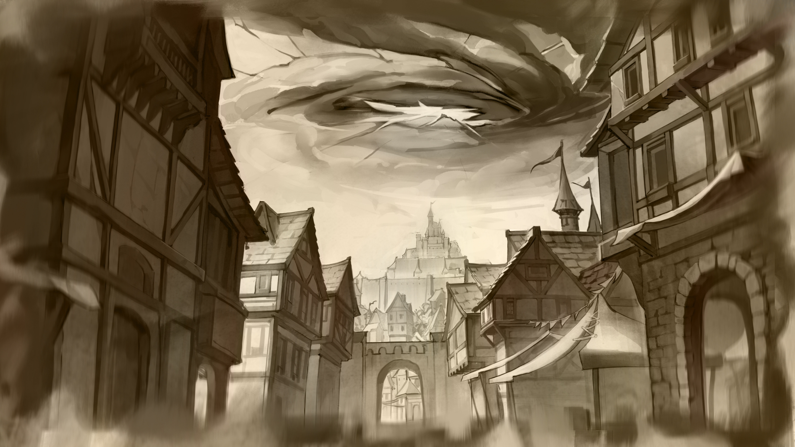
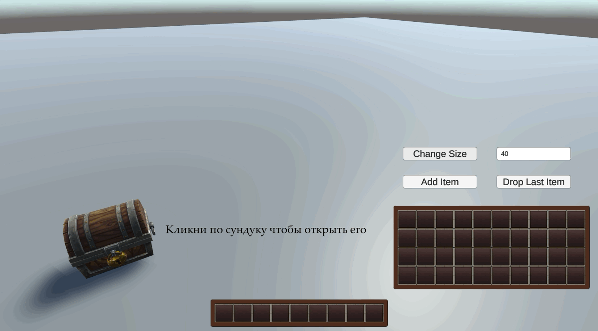
Суть игры в том, что в вымышленном платформере "Бромарио",
(любые совпадения с играми Nintendo случайны. ПОЖАЛУЙСТА НЕ ПОДАВАЙТЕ НА МЕНЯ В СУД (シ. .)シ)
который находится на 2D сцене, нужно управлять камерой с помощью управления оператором, который бежит по съёмочной площадке.Игроку нужно следить и за "Бромарио" и за оператором. "Бромарио" управляется "ИИ" и хаотично носится по своей карте. Если игрок держит его в кадре, то получает за это деньги, если упускает из кадра, то с него списывают деньги. Нужно добежать до конца уровня и не стать банкротом.
Я занимался первоначальной настройкой сцены, контроллером
игрока в 3D пространстве и контроллером камеры.
Трейлер на Youtube
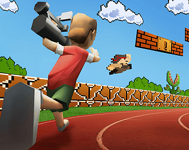
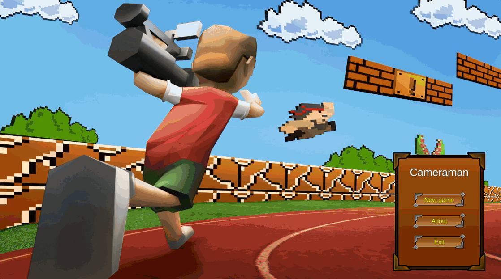
В течении месяца участвовал в "летнем лагере" от компании AGAVA.
Там каждый день проводились мастер классы по различным аспектам геймдева,
и раз в две недели проводили 48 часовые геймджемы.
Тема геймджема: "Дискоммуникация".
Это момент когда происходит что-то, что нарушает ожидание пользователя.
Например:
Мы решили сделать набор комнат в которых перепутаны различные механики. Догадаться о том какая механика была изменена можно было из названия и окружения комнаты. "Игра" получилась так себе, но это был мой первый геймджем)
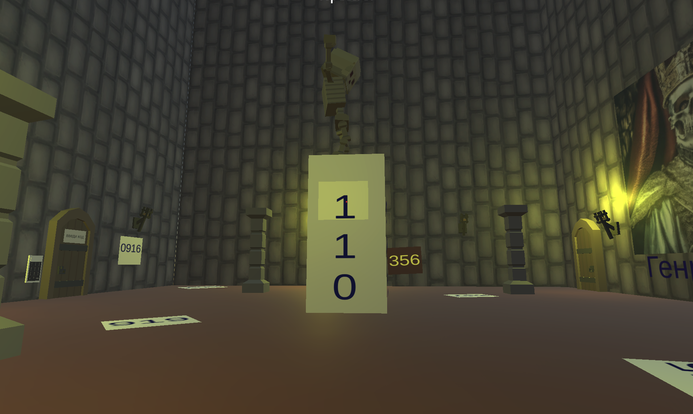
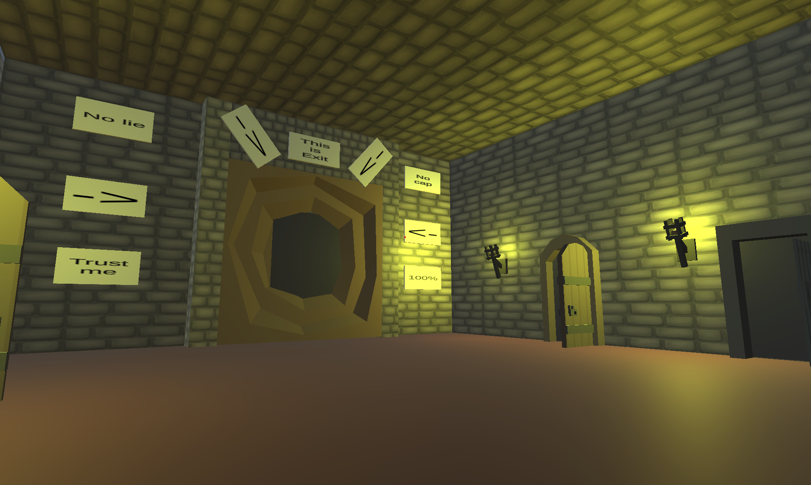
Ссылки на эту игру были утеряны... да и не жалко, так как это был джем о том, кто лучше сделает рескин какой-то браузерной игры про выбор и перемещение одинаковых айтемов из "кучи" в их "ячейки".
Тема геймджема: "Игра про Романа Сакутина" (это основатель студии AGAVA)
Идея пришла тут же: стелс игра про то, как Роман раздаёт ЗП,
в офисе, но при этом не должен остаться банкротом.
Если сотрудник ловит его, то отбирает много денег и таким образом
не получится раздать ЗП всем людям.
ГГ нужно добраться до денежной пушки, чтобы раздавать ЗП на расстоянии
и минимальное количество.
Кстати этот геймджем наша команда выиграла.
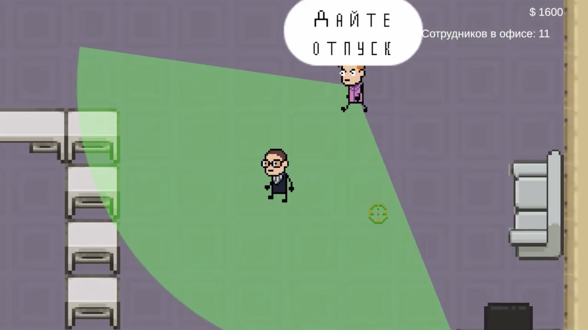
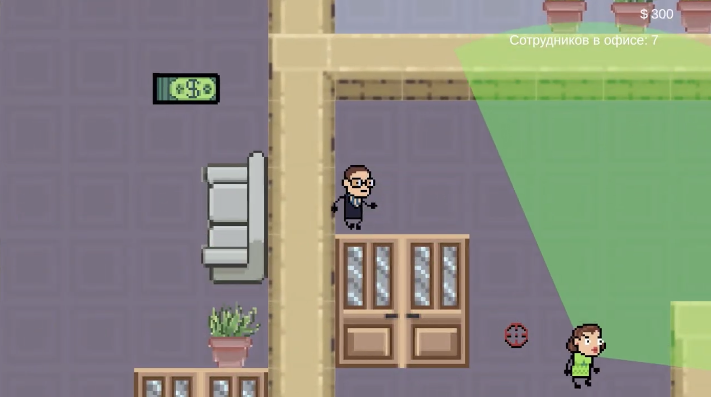
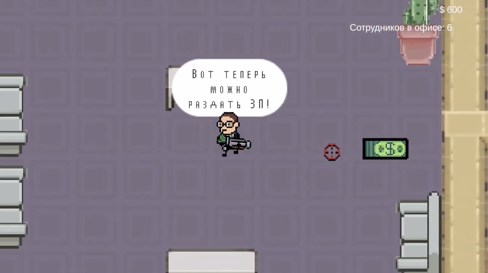